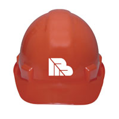

There are many places that you can work, but at Meyer Brothers, we will provide you with the opportunity to succeed and the environment to grow and develop your skills.
Although there are often a variety of great opportunities, we are frequently in the quest for qualified Project Managers and Estimators in Kansas City, MO.
You may fax resumes to 816.246.4850
Henry David Thoreau said, "Men are born to succeed, not to fail." This is what Meyer Brothers is about and why they are still here. It is why they will be here for another 30 years. It is the opportunity and the message they give to every single one of their employees! - Jason G.
A great company to grow with and work for - Jeff S.